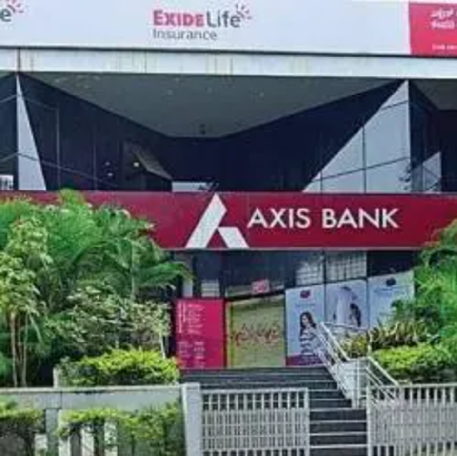

CHITTOOR
AXIS BANK ATM

Axis Bank Limited, formerly known as UTI Bank (1993–2007), is an Indian multinational banking and financial services company headquartered in Mumbai, Maharashtra.
It is India's third largest private sector bank by assets and fourth largest by market capitalisation.
The bank was founded on 3 December 1993 as UTI Bank, opening its registered office in Ahmedabad and a corporate office in Mumbai.
The bank has its head officein Mumbai and Registered office inAhmedabad.It has 3304 branches,14,003 ATMs, and nine internationaloffices.
The bank employs over 55,000people and had a market capitalization